배우기 전에 먼저 해 보세요. 틀려도 괜찮아요.
Falls es regnet, bleiben wir zu Hause.에서 비가 올까요?
falls는 그럴 수도 있다는 조건을 달 때 써요.
Er wird wohl krank sein.은 무슨 뜻일까요?
werden과 wohl로 지금 일을 추측해요.
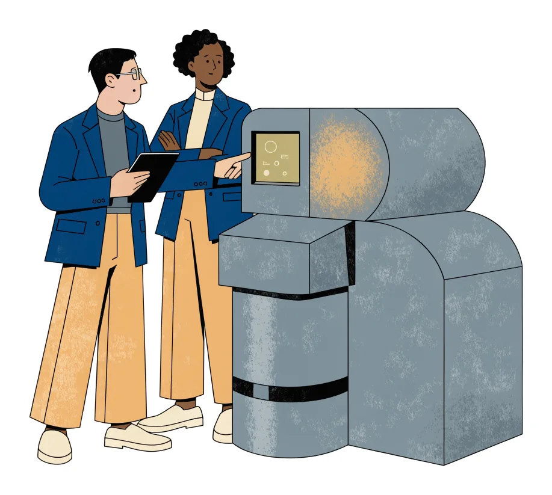
새 기술 이야기는 늘 앞날 이야기예요. 무엇이 좋아지고 무엇이 위험한지, 앞으로 어떻게 될 것 같은지 말해야 해요. 앞날은 아무도 모르니까 조심스럽게 말하는 법이 필요해요. 이 과에서는 조건을 다는 falls, 결과를 잇는 sodass, 그리고 wohl, vermutlich, werden으로 추측하는 말을 배워요.
문법 falls, sodass, Vermutungen (wohl, vermutlich, Futur I)
과제대학전공 분야의 미래를 예상하는 글 쓰기
과제직장새 기술이 내 일에 줄 영향 설명하기
이 과를 마치면 기술의 장단점을 말하고, 예상하고 추측하고, 조건을 달아 말할 수 있어요.
이 과에서 쓸 말이에요. 눌러서 먼저 들어 보세요.
배우기 전에 먼저 해 보세요. 틀려도 괜찮아요.
Falls es regnet, bleiben wir zu Hause.에서 비가 올까요?
falls는 그럴 수도 있다는 조건을 달 때 써요.
Er wird wohl krank sein.은 무슨 뜻일까요?
werden과 wohl로 지금 일을 추측해요.
Lektion 6의 낱말 다섯 개를 다시 떠올려 보세요.
2028년 8월, WG 부엌이에요. Jiu는 6월부터 Datenwerk에서 일해요. 회사에 새 프로그램이 들어왔어요.
들으면서 찾아보세요. Jiu는 석사 논문에서 무엇을 다루려고 하나요?
8월, Frau Hoffmann의 사무실이에요. Kessler Technik이 감지기가 달린 새 기계를 내놓아요. Dohyun은 어제 그 기계를 처음 봤어요.
들으면서 찾아보세요. Dohyun은 새 기계의 어떤 점이 위험하다고 하나요?
8월의 토요일, 마인강 가의 카페예요. Sora는 회사에서 날마다 새 프로그램을 써요. Frau Becker는 자기 일의 앞날이 궁금해요.
들으면서 찾아보세요. Sora는 왜 번역 프로그램이 있어도 말을 배워야 한다고 하나요?
세 대화를 듣고 답하세요.
Datenwerk의 새 프로그램은 무엇을 하나요?
Jiu glaubt, dass die KI bald ihre Arbeit macht.
테스트하는 사람은 아마 아직 오래 필요할 거라고 했어요.
Lena는 무엇이 걱정되나요?
새 기계는 무엇을 스스로 알리나요?
Dohyun wird vermutlich öfter zu Notfällen fahren müssen.
급한 고장 때문에 가는 일은 줄어들 거라고 했어요.
Dohyun이 꼽은 위험은 무엇인가요?
Sora는 회사의 프로그램을 무엇이라고 보나요?
Sora glaubt, dass man in zwanzig Jahren keine Sprachen mehr lernt.
프로그램은 번역은 해도 친구가 될 수는 없다고 했어요.
낱말 51개예요. 낱말이나 예문 앞의 단추를 누르면 소리가 나요. 명사는 der, die, das를 색으로 구분했어요.
die Technologie, die Technologien 기술
Diese Technologie ist ganz neu.이 기술은 아주 새로워요.
die künstliche Intelligenz 인공 지능
Künstliche Intelligenz kann Texte schreiben.인공 지능은 글을 쓸 수 있어요.
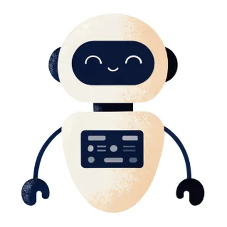
der Roboter, die Roboter 로봇
In der Fabrik arbeiten Roboter.공장에서 로봇이 일해요.
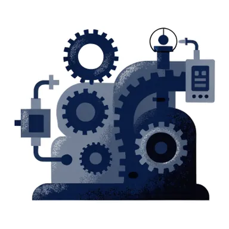
die Maschine, die Maschinen 기계
Die Maschine läuft Tag und Nacht.그 기계는 밤낮으로 돌아가요.
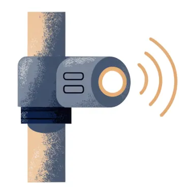
der Sensor, die Sensoren 감지기
Ein Sensor misst die Temperatur.감지기가 온도를 재요.
die Daten 데이터, 자료
Die Daten werden in Deutschland gespeichert.데이터는 독일에 저장돼요.
die Software 소프트웨어
Die Software wird jeden Monat verbessert.소프트웨어는 달마다 손봐요.
das Programm, die Programme 프로그램
Mit diesem Programm mache ich Bilder.저는 이 프로그램으로 그림을 만들어요.
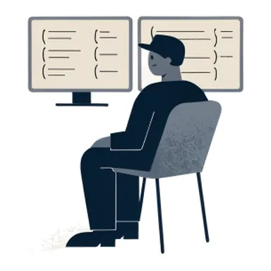
programmieren (hat programmiert) 프로그램을 짜다
Sie programmiert Apps.그 사람은 앱을 만들어요.
die Funktion, die Funktionen 기능
Das Telefon hat viele Funktionen.그 전화기는 기능이 많아요.
das Passwort, die Passwörter 비밀번호
Ich habe mein Passwort vergessen.비밀번호를 잊어버렸어요.
das Netz, die Netze 통신망
Hier habe ich kein Netz.여기는 통신이 안 잡혀요.
digital 디지털의
Die Rechnung kommt digital.청구서는 전자 문서로 와요.
die Digitalisierung 디지털로 바뀌는 일
Die Digitalisierung verändert viele Berufe.디지털 전환이 많은 직업을 바꿔요.
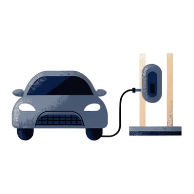
das Elektroauto, die Elektroautos 전기차
Immer mehr Leute fahren ein Elektroauto.전기차를 타는 사람이 갈수록 늘어요.
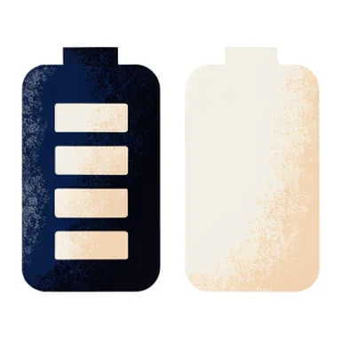
die Batterie, die Batterien 배터리, 건전지
Die Batterie ist leer.배터리가 다 됐어요.
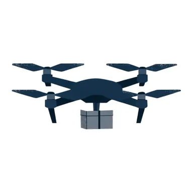
die Drohne, die Drohnen 드론
Die Drohne macht Fotos von oben.드론이 위에서 사진을 찍어요.
die Chance, die Chancen 기회
Die neue Technik ist eine Chance.새 기술은 기회예요.
das Risiko, die Risiken 위험 부담
Jede neue Technik hat Risiken.새 기술에는 저마다 위험이 따라요.
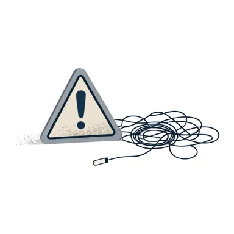
die Gefahr, die Gefahren 위험
Es besteht keine Gefahr.위험은 없어요.
gefährlich 위험한
Schwache Passwörter sind gefährlich.허술한 비밀번호는 위험해요.
der Datenschutz 정보 보호
Datenschutz ist den Kunden wichtig.고객들은 정보 보호를 중요하게 여겨요.
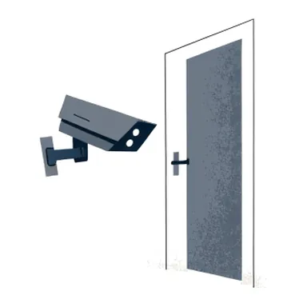
überwachen (hat überwacht) 지켜보다, 감시하다
Sensoren überwachen die Maschine.감지기가 기계를 지켜봐요.
ersetzen (hat ersetzt) 대신하다, 갈다
Das Teil muss ersetzt werden.그 부품은 갈아야 해요.
abhängig 매인, 기대는
Wir sind vom Internet abhängig.우리는 인터넷에 매여 있어요.
effizient 효율이 좋은
Die neue Maschine ist effizienter.새 기계는 효율이 더 좋아요.
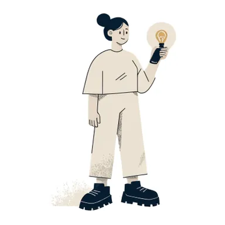
die Erfindung, die Erfindungen 발명
Das Rad war eine große Erfindung.바퀴는 큰 발명이었어요.
erfinden (hat erfunden) 발명하다
Wer hat das Telefon erfunden?전화는 누가 발명했어요?
die Entwicklung, die Entwicklungen 발전, 개발
Die Entwicklung geht sehr schnell.발전이 아주 빨라요.
die Auswirkung, die Auswirkungen 미치는 영향
Welche Auswirkungen hat das auf meine Arbeit?그게 제 일에 어떤 영향을 줘요?
beeinflussen (hat beeinflusst) 영향을 주다
Die Technik beeinflusst unser Leben.기술은 우리 삶에 영향을 줘요.
die Veränderung, die Veränderungen 변화
Die Veränderung kommt schneller, als wir denken.변화는 우리가 생각하는 것보다 빨리 와요.
menschlich 사람다운, 사람의
Fehler sind menschlich.틀리는 것은 사람다운 일이에요.
die Wartung 정비
Die Wartung wird einmal im Jahr gemacht.정비는 한 해에 한 번 해요.
falls 혹시 ~하면
Falls es regnet, bleiben wir zu Hause.혹시 비가 오면 집에 있어요.
sodass 그래서 ~하게 되다
Ich spare Zeit, sodass ich mehr lesen kann.시간이 절약돼서 책을 더 읽을 수 있어요.
vermuten (hat vermutet) 추측하다
Ich vermute, dass er krank ist.그 사람이 아픈 것 같아요.
die Vermutung, die Vermutungen 추측
Das ist nur eine Vermutung.그건 추측일 뿐이에요.
vermutlich 아마
Vermutlich kommt sie später.그 사람은 아마 나중에 올 거예요.
wohl 아마
Das wird wohl nicht funktionieren.그건 아마 안 될 거예요.
möglich 가능한
Das ist möglich, aber teuer.그럴 수는 있지만 비싸요.
unmöglich 불가능한
Ohne Strom ist das unmöglich.전기가 없으면 그건 불가능해요.
die Prognose, die Prognosen 예측
Die Prognose für das nächste Jahr ist gut.내년 예측은 좋아요.
voraussagen (hat vorausgesagt) 내다보다
Niemand kann die Zukunft voraussagen.앞날은 아무도 내다볼 수 없어요.
realistisch 현실에 맞는
Ist dieser Plan realistisch?이 계획이 현실에 맞아요?
in Zukunft 앞으로
In Zukunft arbeiten wir mehr mit Daten.앞으로 우리는 데이터를 더 많이 다뤄요.
die Vision, die Visionen 앞날의 그림
Die Firma hat eine klare Vision.그 회사는 앞날의 그림이 뚜렷해요.
der Aufwand 드는 품
Der Aufwand ist zu groß.품이 너무 많이 들어요.
die Störung, die Störungen 고장, 장애
Wegen einer Störung fährt der Zug nicht.장애 때문에 기차가 다니지 않아요.
die Geschwindigkeit, die Geschwindigkeiten 속도
Die Geschwindigkeit des Internets ist hoch.인터넷 속도가 빨라요.
der Entwickler, die Entwickler 개발자
Die Entwickler arbeiten an einer neuen App.개발자들이 새 앱을 만들고 있어요.
이 과의 낱말로 여덟 문제를 풀어요.
줄을 누르면 소리가 나요. falls는 그럴지 안 그럴지 모를 때, wenn은 그럴 것으로 볼 때 써요.
줄을 누르면 소리가 나요. 위로 갈수록 확실하고, 아래로 갈수록 덜 확실해요.
규칙
falls는 '혹시 ~하면'이라는 뜻이에요. 그 일이 일어날지 아닐지 잘 모를 때 써요. wenn으로도 조건을 말할 수 있지만, wenn은 그럴 것으로 보거나 '~할 때'라는 뜻으로도 써요. falls는 조건에만 쓰고, 일어나지 않을 수도 있다는 느낌이 더 뚜렷해요. 동사는 문장 끝으로 가요.
| 접속사 | 느낌 | 보기 |
|---|---|---|
| wenn | 그럴 것으로 봄, ~할 때 | Wenn ich nach Hause komme, rufe ich an. |
| falls | 그럴지 모름 | Falls ich früher nach Hause komme, rufe ich an. |
주의 안내문과 업무 메일에 자주 나와요. Falls Sie Fragen haben, melden Sie sich bitte. 공손하고 조심스러운 말이에요. 같은 뜻의 명사 표현으로 im Notfall(급할 때는), für alle Fälle(혹시 모르니)도 알아 두세요.
규칙을 보고 바로 확인해 보세요.
… du Hilfe brauchst, ruf mich an. 빈칸에 알맞은 말은 무엇인가요?
규칙
sodass는 앞의 일 때문에 생긴 결과를 이어요. deshalb와 뜻이 가깝지만 문장의 짜임이 달라요. sodass 문장은 늘 뒤에 오고, 동사가 문장 끝으로 가요. deshalb 뒤에는 바로 동사가 와요. damit과도 가려 쓰세요. damit은 '~하려고'라는 목적이고, sodass는 '그래서 ~하게 됐다'는 결과예요.
| 잇는 말 | 보기 |
|---|---|
| sodass | Es regnete, sodass wir zu Hause blieben. |
| deshalb | Es regnete. Deshalb blieben wir zu Hause. |
| damit | Ich nehme einen Schirm mit, damit ich nicht nass werde. |
주의 so와 dass를 떼어서 쓸 수도 있어요. 그때 so는 형용사 앞에 와요. Die Daten sind so kompliziert, dass ich eine Schulung brauche. '너무 ~해서 ~하다'라는 뜻이에요.
규칙을 보고 바로 확인해 보세요.
Der Zug hatte Verspätung, … ich den Termin verpasst habe. 빈칸에 알맞은 말은 무엇인가요?
규칙
확실하지 않은 일을 말할 때는 추측하는 말을 넣어요. sicher는 거의 틀림없을 때, wahrscheinlich는 그럴 가능성이 클 때, vermutlich와 wohl은 그렇게 짐작할 때, vielleicht는 반반일 때 써요. 이 말들은 문장 맨 앞이나 동사 뒤에 와요. wohl은 맨 앞에 오지 않아요. 동사로는 Ich vermute, dass …, Ich nehme an, dass …라고 해요.
| 얼마나 확실한가 | 말 |
|---|---|
| 거의 틀림없음 | sicher, bestimmt |
| 가능성이 큼 | wahrscheinlich |
| 짐작 | vermutlich, wohl |
| 반반 | vielleicht, möglicherweise |
주의 독일어에서는 앞날을 잘라 말하지 않고 이런 말로 조심스럽게 말하는 일이 많아요. 발표나 보고서에서 vermutlich, voraussichtlich를 넣으면 믿음직하게 들려요.
규칙을 보고 바로 확인해 보세요.
Sie ist nicht gekommen. … ist sie krank. 빈칸에 알맞은 말은 무엇인가요?
규칙
2과에서 배운 Futur I은 추측할 때도 써요. 앞날을 내다볼 때는 물론이고, 지금 일을 짐작할 때도 werden과 Infinitiv를 써요. Er wird wohl krank sein.은 내일 아플 거라는 말이 아니라, 지금 아픈 것 같다는 말이에요. wohl, vermutlich, wahrscheinlich를 함께 쓰면 추측이라는 것이 더 뚜렷해져요.
| 뜻 | 보기 |
|---|---|
| 앞날을 내다봄 | In zehn Jahren werden Autos wohl selbst fahren. |
| 지금 일을 짐작함 | Sie wird wohl schon zu Hause sein. |
| 지금 일을 짐작함 | Das wird wohl stimmen. |
주의 würde와 헷갈리지 마세요. würde는 실제가 아닌 일을 상상하는 말이에요. Ich würde gern kommen. werden은 그럴 것으로 본다는 말이에요. Ich werde wohl kommen.
규칙을 보고 바로 확인해 보세요.
Er ist nicht im Büro. Er … wohl noch im Zug sitzen. 빈칸에 알맞은 말은 무엇인가요?
듣고 알맞은 것을 고르세요.
인공 지능 덕분에 어떻게 되나요?
Die KI findet einfache Fehler schneller, sodass wir mehr Zeit für die schwierigen Aufgaben haben.
1월에 시험하는 것은 확실한가요?
Falls die Firma in Hamburg zustimmt, testen wir das System ab Januar.
Lena는 얼마나 확실하게 말하나요?
In zehn Jahren wird es viele Berufe wohl nicht mehr geben.
Frau Becker는 무엇을 짐작하나요?
Dann wird es das Sprachcafé wohl auch in zwanzig Jahren noch geben.
기술을 다루는 라디오 방송이에요. 듣고 답하세요.
Das Haus denkt mit
Moderatorin Herr Brenner, Sie bauen Häuser, die mitdenken. Was kann so ein Haus?
Herr Brenner Zum Beispiel heizen. Sensoren merken, ob jemand zu Hause ist. Falls niemand da ist, wird die Heizung automatisch kleiner gestellt.
Moderatorin Sodass man Energie spart?
Herr Brenner Genau. Viele Familien sparen vermutlich zwanzig Prozent. Auch das Licht geht aus, wenn man den Raum verlässt.
Moderatorin Und falls das Internet ausfällt?
Herr Brenner Dann funktioniert alles weiter, nur ohne die App. Man kann jedes Gerät auch mit der Hand bedienen.
Moderatorin Wird in zehn Jahren jedes Haus so sein?
Herr Brenner Jedes wohl nicht. Aber neue Häuser werden wahrscheinlich alle solche Sensoren haben.
Was passiert, falls niemand zu Hause ist?
Viele Familien sparen vermutlich zwanzig Prozent Energie.
Was passiert, falls das Internet ausfällt?
Herr Brenner glaubt, dass in zehn Jahren jedes Haus so sein wird.
모든 집은 아니고, 새로 짓는 집에는 아마 다 그런 감지기가 있을 거라고 했어요.
Wie kann man die Geräte ohne App bedienen?
지역 신문의 기사예요. 읽고 답하세요.
Ein Roboter im Seniorenheim
Frankfurt. Im Seniorenheim am Park arbeitet seit einem Monat ein Roboter. Er heißt Emma und ist ungefähr so groß wie ein Kind.
Emma bringt Getränke in die Zimmer und erinnert die Bewohner an ihre Termine. Sie kann einfache Fragen beantworten, aber sie pflegt niemanden.
„Emma nimmt uns kleine Wege ab, sodass wir mehr Zeit für Gespräche haben“, sagt die Leiterin des Hauses.
Nicht alle Bewohner sind begeistert. „Ein Roboter kann keine Hand halten“, meint eine 84-jährige Bewohnerin.
Das Projekt läuft zunächst sechs Monate. Falls die Bewohner und die Mitarbeiter zufrieden sind, wird das Heim wohl einen zweiten Roboter kaufen.
Seit wann arbeitet der Roboter im Seniorenheim?
Was macht Emma?
Die Mitarbeiter haben durch Emma weniger Zeit für Gespräche.
자잘한 걸음을 덜어 줘서 이야기할 시간이 늘었다고 했어요.
Was meint die 84-jährige Bewohnerin?
Das Heim kauft sicher einen zweiten Roboter.
모두가 만족하면 아마 살 거라고 했어요.
알맞은 접속사를 고르세요.
du Hilfe brauchst, ruf mich an.
혹시 도움이 필요하면 전화해요.
Der Zug hatte Verspätung, ich zu spät kam.
기차가 늦어서 제가 지각했어요.
Ich nehme einen Schirm mit, ich nicht nass werde.
젖지 않으려고 우산을 가져가요.
목적은 damit이에요.
das Internet ausfällt, funktioniert die Heizung weiter.
혹시 인터넷이 끊겨도 난방은 계속 돼요.
Die Maschine meldet Probleme früh, die Produktion nicht stehen bleibt.
기계가 문제를 일찍 알려서 생산이 멈추지 않아요.
Rufen Sie uns an, Sie Fragen haben.
혹시 궁금한 점이 있으면 전화해 주세요.
낱말의 순서를 보고 sodass와 deshalb 가운데 고르세요.
Es regnete, wir zu Hause blieben.
비가 와서 우리는 집에 있었어요.
동사가 맨 끝에 있으면 sodass예요.
Es regnete. blieben wir zu Hause.
비가 왔어요. 그래서 우리는 집에 있었어요.
바로 뒤에 동사가 오면 deshalb예요.
Die Daten sind kompliziert, ich eine Schulung brauche.
데이터가 복잡해서 저는 교육이 필요해요.
Die Batterie war leer. konnte ich nicht anrufen.
배터리가 다 됐어요. 그래서 전화하지 못했어요.
Die Daten sind kompliziert, dass ich eine Schulung brauche.
데이터가 너무 복잡해서 저는 교육이 필요해요.
추측하는 말이에요. 알맞은 것을 고르세요.
Das Licht ist aus. Er wohl schon schlafen.
불이 꺼졌어요. 그 사람은 아마 벌써 자고 있을 거예요.
In zehn Jahren die meisten Autos wohl elektrisch fahren.
10년 뒤에는 아마 대부분의 차가 전기로 달릴 거예요.
Ich , dass der Test morgen fertig ist.
테스트가 내일 끝날 것 같아요.
dauert die Einführung ein halbes Jahr.
들여놓는 데는 아마 반년이 걸릴 거예요.
Das ist , aber weniger effizient.
그럴 수는 있지만 효율은 떨어져요.
Sie ist nicht im Büro. Sie wird wohl noch im Zug .
그 사람은 사무실에 없어요. 아마 아직 기차에 있을 거예요.
얼마나 확실한지에 따라 짝지으세요.
낱말을 순서대로 눌러 문장을 만드세요.
혹시 도움이 필요하면 전화해요.
시간이 절약돼서 책을 더 읽을 수 있어요.
아마 반년이 걸릴 거예요.
그 사람은 아마 나중에 올 거예요.
그 사람이 아픈 것 같아요.
낱말과 설명을 짝지으세요.
빈칸에 알맞은 낱말을 쓰세요.
Ich habe mein vergessen.
비밀번호를 잊어버렸어요.
Jede neue Technik hat .
새 기술에는 저마다 위험이 따라요.
Das Teil muss werden.
그 부품은 갈아야 해요.
Niemand kann die Zukunft .
앞날은 아무도 내다볼 수 없어요.
듣고 그대로 써 보세요.
Falls sie einen Fehler macht, muss ein Mensch ihn finden. 혹시 그것이 틀리면 사람이 찾아내야 해요.
Das wird wohl ein halbes Jahr dauern. 아마 반년이 걸릴 거예요.
Ich spare Zeit, sodass ich mehr lesen kann. 시간이 절약돼서 책을 더 읽을 수 있어요.
Ein großer Vorteil ist, dass man Zeit spart. 큰 장점은 시간이 절약된다는 거예요.
Die Arbeit wird einfacher, sodass weniger Fehler passieren. 일이 쉬워져서 실수가 줄어요.
Das ist eine große Chance für uns. 그건 우리에게 큰 기회예요.
Ohne diese Technik wäre das unmöglich. 이 기술이 없으면 그건 불가능해요.
Das größte Risiko ist der Datenschutz. 가장 큰 위험은 정보 보호예요.
Wir werden immer abhängiger von Programmen. 우리는 프로그램에 갈수록 더 매여요.
Man weiß nicht, welche Auswirkungen das hat. 그게 어떤 영향을 줄지 알 수 없어요.
Nicht alles, was möglich ist, ist auch gut. 할 수 있다고 해서 다 좋은 것은 아니에요.
Das wird wohl noch einige Jahre dauern. 그건 아마 몇 해는 더 걸릴 거예요.
Vermutlich werden viele Berufe anders aussehen. 아마 많은 직업이 달라질 거예요.
Ich vermute, dass die Veränderung schnell kommt. 변화가 빨리 올 것 같아요.
Niemand kann das genau voraussagen. 그건 아무도 정확히 내다볼 수 없어요.
Falls das System gut funktioniert, benutzen wir es weiter. 그 시스템이 잘 돌아가면 계속 써요.
Falls es Probleme gibt, brauchen wir eine andere Lösung. 혹시 문제가 생기면 다른 해결책이 필요해요.
Das kommt darauf an, wie teuer es ist. 그건 얼마나 비싼지에 달려 있어요.
Unter einer Bedingung: Die Daten bleiben bei uns. 조건이 하나 있어요. 데이터는 우리 쪽에 둬요.
Für meine Arbeit bedeutet das mehr Zeit für Kunden. 제 일로 보면 고객에게 쓸 시간이 늘어난다는 뜻이에요.
Ich werde wohl eine Schulung brauchen. 저는 아마 교육이 필요할 거예요.
Manche Aufgaben werden wegfallen, neue werden entstehen. 없어지는 일도 있고 새로 생기는 일도 있을 거예요.
Ich sehe das als Chance. 저는 그걸 기회로 봐요.
과제 고르기
역할 대화와 말하기, 쓰기 과제는 대학 생활과 직장 생활 두 가지예요. 하나를 고르면 다음 과에서도 그쪽 과제가 나와요. 언제든 바꿀 수 있어요.
대화 A에서 역할을 하나 고르세요. 상대의 말은 음성으로 나오고, 내 차례에는 직접 말해요.
대화 B에서 역할을 하나 고르세요. 상대의 말은 음성으로 나오고, 내 차례에는 직접 말해요.
내 생활을 떠올리고 칸을 채우세요. 완성된 문장을 소리 내어 읽어 보세요.
Ich benutze jeden Tag mein Smartphone, sodass ich überall arbeiten kann.
Falls der Akku leer ist, habe ich ein Ladekabel dabei.
In zehn Jahren wird das wohl ganz anders sein.
나는 컴퓨터 공학을 공부해요. 내 분야가 10년 뒤에 어떤 모습일지 생각해 봤어요. 인공 지능이 간단한 프로그램을 스스로 만들 것 같아요. 그래서 개발자는 프로그램을 짜는 일보다 검증하고 설계하는 일을 더 많이 하게 될 거예요.
좋은 점은 지루한 일이 줄어든다는 것이고, 위험은 사람이 프로그램을 이해하지 못하게 된다는 거예요. 인공 지능이 틀릴 때를 대비해서 사람이 늘 결과를 확인해야 한다고 생각해요.
Lena가 물어요. 쪽지를 보고 답하세요. 질문을 듣고 소리 내어 답한 뒤 예시 답과 비교해 보세요.
Du studierst Informatik. Wie sieht dein Fach in zehn Jahren aus? 컴퓨터 공학을 공부하잖아요. 10년 뒤에 그 분야는 어떤 모습일까요?
Vermutlich wird die KI einfache Programme selbst schreiben.
Und was machen dann die Entwickler? 그럼 개발자들은 뭘 해요?
Sie werden wohl mehr prüfen und planen. Das Programmieren wird weniger wichtig.
Ist das gut oder schlecht? 그게 좋은 거예요, 나쁜 거예요?
Beides. Die langweiligen Aufgaben fallen weg, sodass man mehr Zeit für Ideen hat.
Und was ist das Risiko? 위험한 점은 뭐예요?
Dass wir die Programme nicht mehr verstehen. Dann werden wir abhängig.
Was kann man dagegen tun? 그러지 않으려면 어떻게 해야 해요?
Ein Mensch muss die Ergebnisse immer prüfen, falls die KI einen Fehler macht.
Mein Fach in zehn Jahren
내 전공 분야가 10년 뒤에 어떤 모습일지 예상하는 글을 써 보세요. 일곱 문장쯤 써요.
Ich studiere Informatik. In zehn Jahren wird die künstliche Intelligenz vermutlich einfache Programme selbst schreiben. Die Entwickler werden wohl weniger programmieren und mehr prüfen. Ein Vorteil ist, dass die langweiligen Aufgaben wegfallen, sodass man mehr Zeit für neue Ideen hat. Das größte Risiko ist, dass wir die Programme nicht mehr verstehen. Falls die KI einen Fehler macht, muss ein Mensch ihn finden. Deshalb wird man gute Entwickler wahrscheinlich noch lange brauchen.
다 쓴 뒤에 확인해 보세요.
우리 회사는 내년부터 고객 문의에 답하는 인공 지능 프로그램을 들여와요. 간단한 물음에는 프로그램이 바로 답해요. 나는 고객 상담을 맡고 있어요. 팀장이 이 기술이 내 일을 어떻게 바꿀지 물어요.
간단한 문의가 줄어서 어려운 문제에 시간을 더 쓸 수 있을 거예요. 하지만 프로그램이 틀린 답을 할 수도 있어요. 그래서 처음 석 달은 답을 내가 확인하고 싶어요. 교육도 필요해요.
팀장이 물어요. 쪽지를 보고 답하세요. 질문을 듣고 소리 내어 답한 뒤 예시 답과 비교해 보세요.
Ab Januar beantwortet ein Programm die einfachen Fragen der Kunden. Was bedeutet das für Ihre Arbeit? 1월부터 프로그램이 고객의 간단한 물음에 답해요. 맡으신 일은 어떻게 달라질까요?
Ich werde wohl weniger einfache Anfragen bekommen, sodass ich mehr Zeit für schwierige Probleme habe.
Sehen Sie auch Risiken? 위험한 점도 있다고 보세요?
Ja. Falls das Programm eine falsche Antwort gibt, verlieren wir vielleicht Kunden.
Was schlagen Sie vor? 어떻게 하면 좋을까요?
In den ersten drei Monaten würde ich die Antworten gern selbst prüfen.
Brauchen Sie eine Schulung? 교육이 필요하세요?
Vermutlich ja. Ich muss verstehen, wie das Programm arbeitet.
Glauben Sie, dass das Programm Sie eines Tages ersetzt? 언젠가 프로그램이 일을 대신할 거라고 보세요?
Das glaube ich nicht. Bei schwierigen Problemen wollen die Kunden wohl weiter mit einem Menschen sprechen.
Die neue Technik und meine Arbeit
회사에 들어오는 새 기술이 내 일을 어떻게 바꿀지 팀장에게 메일로 써 보세요. 일곱 문장쯤 써요.
Sehr geehrte Frau Hoffmann, ab Januar beantwortet ein Programm die einfachen Fragen unserer Kunden. Für meine Arbeit bedeutet das vermutlich weniger einfache Anfragen, sodass ich mehr Zeit für schwierige Probleme habe. Das sehe ich als Chance. Es gibt aber auch ein Risiko: Falls das Programm eine falsche Antwort gibt, verlieren wir vielleicht Kunden. Deshalb würde ich die Antworten in den ersten drei Monaten gern selbst prüfen. Außerdem werde ich wohl eine Schulung brauchen. Mit freundlichen Grüßen, Minji Choi
다 쓴 뒤에 확인해 보세요.
Ich kann Vorteile und Risiken einer Technik nennen.기술의 장점과 위험을 말할 수 있어요.
Ich kann sagen, was vermutlich passieren wird.앞으로 어떻게 될 것 같은지 말할 수 있어요.
Ich kann Bedingungen mit falls nennen.falls로 조건을 달 수 있어요.
Ich kann erklären, wie neue Technik meine Arbeit oder mein Studium verändert.새 기술이 내 일이나 공부를 어떻게 바꾸는지 설명할 수 있어요.